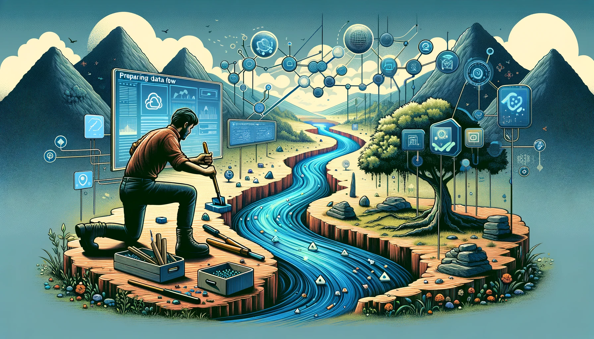

pacman::p_load(tmap, sf, tidyverse)
# load the libraries, the pacman itself will only be loaded temporarilyIn-class Exercise 1: Preparing the Data Flow

Getting Started
The code chunk below load the following packages: - tmap: for thematic mapping - sf : for geospatial data handling - tidyverse for non-spatial data handling.
Preparing the Data Flow
Importing the Aspatial data
Import the Passenger Volume by Origin Destination Bus Stops data set downloaded from LTA DataMall by using read_csv() of readr package.
#|eval: false
odbus <- read_csv("../data/aspatial/origin_destination_bus_202308.csv.gz")
head(odbus)# A tibble: 6 × 7
YEAR_MONTH DAY_TYPE TIME_PER_HOUR PT_TYPE ORIGIN_PT_CODE DESTINATION_PT_CODE
<chr> <chr> <dbl> <chr> <chr> <chr>
1 2023-08 WEEKDAY 16 BUS 04168 10051
2 2023-08 WEEKENDS/… 16 BUS 04168 10051
3 2023-08 WEEKENDS/… 14 BUS 80119 90079
4 2023-08 WEEKDAY 14 BUS 80119 90079
5 2023-08 WEEKENDS/… 17 BUS 44069 17229
6 2023-08 WEEKDAY 17 BUS 44069 17229
# ℹ 1 more variable: TOTAL_TRIPS <dbl>Change Character Data Type to Numerical Factor
odbus08 is a tibble dataframe. However, ORIGIN_PT_CODE and DESTINATION_PT_CODE are in character format. These are transformed into factors (categorical data type) for further analysis.
odbus$ORIGIN_PT_CODE <- as.factor(odbus$ORIGIN_PT_CODE)
odbus$DESTINATION_PT_CODE <- as.factor(odbus$DESTINATION_PT_CODE)Extracting the data for analysis
extract commuting flows by extracting Origin bus stop codes and number of trips for weekdays between 7 and 9 o’clock, into a new dataframe:
origtrip_7_9 <- odbus %>%
filter(DAY_TYPE == "WEEKDAY") %>%
filter(TIME_PER_HOUR >= 7 &
TIME_PER_HOUR <= 9) %>%
group_by(ORIGIN_PT_CODE) %>%
summarise(TRIPS = sum(TOTAL_TRIPS))
glimpse(origtrip_7_9)
# the %>% sign is for stepping the process in order Importing the geospatial data
Two geospatial data will be used in this exercise both data contain coordinate in geometry column:
#} eval: false
busstop <- st_read(dsn = "../data/geospatial",
layer = "BusStop") %>%
st_transform(crs = 3414) # the st_transform is for projectionReading layer `BusStop' from data source `C:\ameernoor\ISSS624\data\geospatial' using driver `ESRI Shapefile'
Simple feature collection with 5161 features and 3 fields
Geometry type: POINT
Dimension: XY
Bounding box: xmin: 3970.122 ymin: 26482.1 xmax: 48284.56 ymax: 52983.82
Projected CRS: SVY21glimpse(busstop)Rows: 5,161
Columns: 4
$ BUS_STOP_N <chr> "22069", "32071", "44331", "96081", "11561", "66191", "2338…
$ BUS_ROOF_N <chr> "B06", "B23", "B01", "B05", "B05", "B03", "B02A", "B02", "B…
$ LOC_DESC <chr> "OPP CEVA LOGISTICS", "AFT TRACK 13", "BLK 239", "GRACE IND…
$ geometry <POINT [m]> POINT (13576.31 32883.65), POINT (13228.59 44206.38),…mpsz <- st_read(dsn = "../data/geospatial",
layer = "MPSZ-2019") %>%
st_transform(crs = 3414)
glimpse(mpsz)